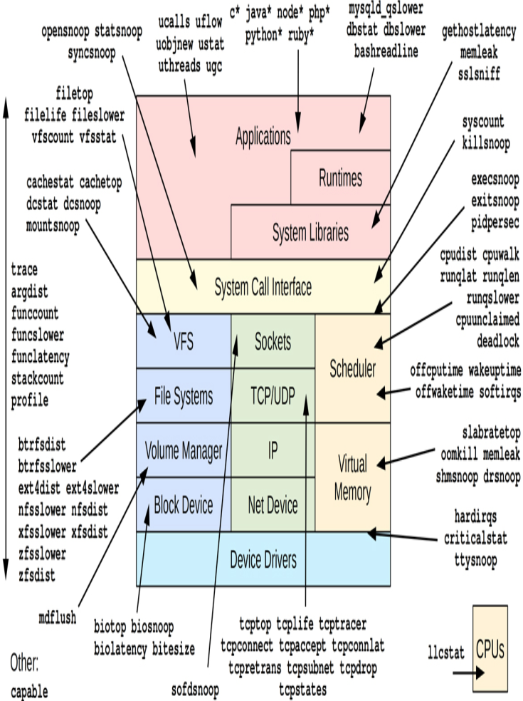
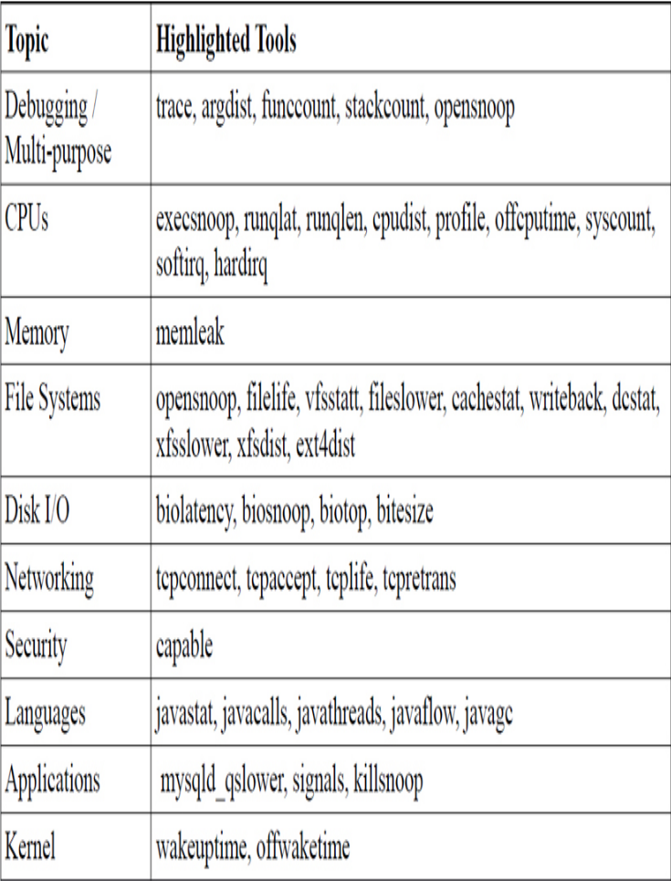

bpf工具
本文介绍bpf调试内核。
bcc（bpf）性能分析工具从应用层到内核层都可以分析。下面的图反映了各种bcc工具作用在内核的各个部件。

Figure 1: BCC性能分析工具
下面的表格对这些工具进行了下分类，以它们各自能分析什么对象的角度。

Figure 2: BCC工具分类
bcc工具安装很容易，如下命令可以安装：
sudo apt-get install bpfcc-tools linux-headers-$(uname -r)
默认情况下这些工具会被安装到/sbin目录，后缀是bpfcc。